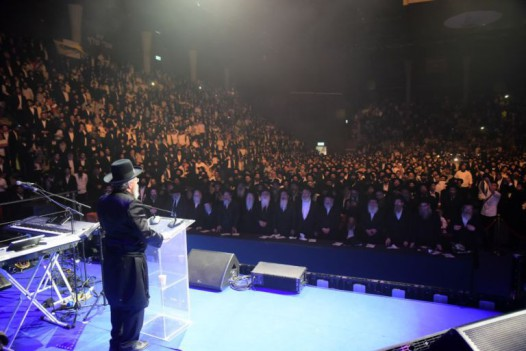

- מוגש לרגל יום הולדתו, ב’ אייר –
כמאה ועשרה קילומטרים מפרידים בינה לבין פראג בירת צ’כיה. זו עיר קטנה, כשעה וחצי בלבד הליכה מקצה האחד לקצה האחר שלה, ולמרות זאת היא המהווה את אחד מאתרי המרחצאות המפורסמים ביותר בעולם בזכות יותר משבעים מעיינות מים מינרליים חמים הנובעים בה מעומקים שונים.
- מוגש לרגל יום הולדתו, ב’ אייר –

קארלובי וארי, או בשמה הגרמני קארלסבאד.
כמאה ועשרה קילומטרים מפרידים בינה לבין פראג בירת צ’כיה. זו עיר קטנה, כשעה וחצי בלבד הליכה מקצה האחד לקצה האחר שלה, ולמרות זאת היא המהווה את אחד מאתרי המרחצאות המפורסמים ביותר בעולם בזכות יותר משבעים מעיינות מים מינרליים חמים הנובעים בה מעומקים שונים.
המטייל ברחבי העיר ימצא בה ברזים פזורים ומפלי מים הנובעים מעומק האדמה. קל לראות תיירים סובבים ברחובות, אוחזים בידם בדבקות ספלי חרס בעלי זרבובית, והם ממלאים לעצמם מים מינרליים מתוך הברזים המיוחדים המפוזרים ברחבי העיר, היישר מתוך המעיינות. טעמו של המים נורא, כך מספרים מבקרים, אולם בני העיר מבטיחים חגיגית כי למים האלה סגולות מצוינות והשפעה מבריאה ומופלאה.
העיר עצמה מותירה במבקר רושם גדול, ולא בכדי, שכן עדיין ניכר בה חותם הפאר שהותירה בה רוזנת אצילית. התחושה היא של ביקור בשמורת טבע קסומה המהווה חממת מרגוע ומנוחה למתרפאים.
שני מיליון התיירים המגיעים לעיר מדי שנה, הינם המשך למיליוני נופשים ומבקשי–מרפא שהגיעו אל העיר במשך השנים, ביניהם כ”ק אדמו”ר האמצעי, וכן אדמו”ר מהר”ש שהגיע אליה לעתים כדי להירפא, ואף אדמו”ר הרש”ב.
ב
ימים מספר שהה אדמו”ר מהר”ש בקארלסבאד לרגל מצב בריאותו. מספר שעות ביום, בעיקר אחר הרחצה במעיינות החמים, נהג לטייל בין אילנות היער במטרה לשאוף אויר צח ולהבריא את גופו הדווה.
יום אחד, בעת שישב לנוח על אחד הכסאות שנועדו עבור המתרפאים, עבר לידו אדם מכובד שתואר–הדר פני הרבי משך את תשומת לבו. הלה הביט ימינה ושמאלה, ולמרות שהיו עוד ספסלים פנויים בסביבה, בחר הלה להתיישב ליד הרבי בחפשו אמתלא לפתוח בשיחה.
לא ארכו הדקות, ושיחה ערה קלחה בין השניים שדברו בעניני הטבע וחכמות העולם. הרושם שהותיר הרבי בזכות הדרת פניו, התחזק עוד יותר נוכח חכמתו שנבעה במהלך השיחה.
בשלב מסוים לא התאפק האיש, ושאל את הרבי מי הוא ומאין הוא בא.
“הנני רב מהעיירה ליובאוויטש ברוסיה”, השיב אדמו”ר מהר״ש קצרות. “ואתם, מי אתם?” החזיר בשאלה.
“הנני המשנה למלך אוסטריה”, השיב האלמוני.
ככלותם לדבר, קמו השניים מהספסל המעוטר ונפרדו איש איש לדרכו.
“רבינו”, פנה ר’ לויק הגבאי אל הרבי לאחר שהלה נעלם בקצה אחד השבילים הססגוניים של העיר, “מה באמת רצה השר?”
הביט בו הרבי בעיניים טובות. “מה לך מתפלא לויק”, השיב הרבי, “הרי נאמר ‘והיו מלכים אומניך’”…
ג
מספרים חסידים, כי בשעה ששהה הרבי בקארלסבאד, עצרה באחד הימים מרכבה ליד מעונו, ממנה ירדה אישה כבודה ועוף מקרקר בידה. נכנסה האישה לבית הרבי והציגה עצמה כבתו של גאון–עולם בעל ה׳חתם סופר׳.
“רבי”, אמרה, “הנני נמצאת פה תקופת–מה, אף אני לצרכי הבראה, ואינני יכולה לאכול משחיטתו של איש. אולם משחיטה שלכם אוכל”.
נענע הרבי מהר”ש לבקשתה ושחט את העוף בעבורה.
מעניין כי במכתב שכתב כמה ימים לאחר מכן למשפחתו שבליובאוויטש, כינה עצמו “שוחט–ובודק דקארלסבאד”…
ד
לאחר תקופת שהות של הרבי בקארלסבאד, שב לביתו שבליובאוויטש. קהל גדול של חסידים המתין לבואו במעמד נרגש של קבלת פנים. דמותו ההדורה של החסיד ר’ אבא פערסאן, שהיה ראש המדברים בכל מקום, נראתה מתקרבת אל הרבי, ובשם החסידים כולם דרש בשלומו של הרבי.
על פני הדרת קדשו ניכרה שמחה ובדיחות הדעת. “בריא הנני, ברוך השם”, השיב הרבי והוסיף, “והראיה, כי כל הרופאים הורו לי לאכול את כל מה שאסור באכילה, ואסרו עלי את כל המותר באכילה, וזה לי האות כי בריא אנכי. לו היו מצווים לעבור רק על דבר אחד, חובה היה לשמוע דבריהם אפילו לענין אכילה ביום הכפורים, אך אם קובעים כלל גדול להיפך, אין לי לשמוע כלל להוראותיהם. ומכאן ואילך יודע אני, שרפואתי השלמה לא תבוא מהם, אלא מהשם יתברך”.
כיוון שרוחו של הרבי הייתה טובה עליו, התאספו החסידים סביבו, והוא פתח וסיפר כי בין השאר שהה בפראג הסמוכה, שם ביקר בבית הכנסת שבנו גולי ספרד וכן בבית הכנסת אלטנוי–שול, אשר בעליית הגג שלו נמצא, על פי המסורת, הגולם שיצר המהר״ל.
מצד יושנו של בית הכנסת אין מניחים את העוברים והשבים להיכנס בו, אך לכבוד אדמו”ר מהר”ש, שלח פרנס החודש את המפתחות, והרבי נכנס וראה שם מה שראה.
בין השאר, הוסיף הרבי וסיפר, כי ראה על השולחן פנקס ישן נושן ובו רשומים לזכרון עניינים מופלאים שארעו בקהילה במשך השנים.
“הבה ואספר לכם סיפור אחד שקראתי בפנקס הקהילה”, אמר הרבי במתק שפתיים לעדת החסידים שהגיעה להקביל את פניו.
ה
ר’ יצחק היה גביר גדול ונכבד, מנכבדי הקהילה היהודית בפראג. שורשיו של ר’ יצחק היו נטועים עמוק בהיסטוריה של העיר שספגה במשך השנים אוצרות יהודים מדור לדור.
ייתכן בשל עושרו, ייתכן בשל ייחוסו וייתכן בשל מעשיו הטובים, היה ר’ יצחק ראש הקהל. תחתיו כיהנו י”ב פרנסי החודש שניהלו את ענייני הקהילה, והוא עומד על גבם. למרות הזמן הרב שהשקיע בשמירת הקהילה, את פרנסתו לא נטל מקופת הציבור, אלא ממשרתו כרופא מומחה.
דא עקא, שחייו לא היו סוגים בשושנים. זקן היה ובנים לא היו לו. רעייתו נפטרה זה מכבר, והוא נותר לבדו, מנהל את חייו כפי שהורגל כל השנים.
בשלב מסוים חלה ר’ יצחק. כשמחלתו גברה, חש כי קרובה שעתו להיאסף אל אבותיו. הוא שלח אפוא מרכבה אל רבה של פראג כדי שיבוא אליו ויאמר עמו יחד את מילות הוידוי.
לא חלפה שעה ארוכה, והעגלון חזר לבדו, ועמד בדומיה לפני מיטת ראש הקהל.
“היכן הרב?” תמה ראש הקהל בקול רפה.
“הרב לא הגיע”, השיב העגלון. “הייתי בביתו והוא ביקש שאומר כי עדיין לא הגיע הזמן, וכי במהרה תקום ממיטתך ותחלים כאחד האדם”.
לא היה גבול לתמהונו של ראש הקהל נוכח תשובתו של הרב. הוא ידע כי הרב אינו משתמש ברוח הקודש, ומאין לו לדעת זאת?
השתוממותו גברה כאשר החל להרגיש שכוחותיו אכן שבים אליו, וכעבור ימים לא–רבים התחזק ועמד על רגליו. כשהרגיש בטוח לצאת מן הבית, עשה את נסיעתו הראשונה לבית הרב.
“אמנם הייתי צריך לכעוס עליך”, פתח ראש הקהל התקיף את שיחתו עם הרב, “מדוע לא התחשבת בי לבוא אלי בעת צרתי שקראתי לך, ובפרט כששיערתי שאלו הם ימיי האחרונים. אולם מאחר ורואה אני שדברי הרב התקיימו, ועומד אני על רגליי, אין לי כל קפידא על הרב”.
צהלו פניו של הרב, והושיט ידו ל”שלום עליכם” לבבי. “ברוך רופא חולים” ברכו.
“ירשה לי כבוד הרב לשאול”, הוסיף ראש הקהל, “תמה אני על סמך מה היה ברור לכבודו כי אעמוד ממיטתי ולא הגיע זמן קיצי?”
שחק הרב שחוק לבבי, והציע כסא בפני ראש הקהל הנכבד. “שב ואספר לך”, אמר.
“לא מזמן, כשעליתי על משכבי, חלמתי חלום. ובחלומי, הנה אני יושב בגן־עדן, כולו טוהר והדר, מראות שלא ראתם עין מעולם ותחושה שאי אפשר להגדירה במילים. אני עומד שם ומתבונן כה וכה, ורואה זקנים רבים יושבים שם מסובים, איש איש תחת חופתו, וכולם נהנים מזיו השכינה. שמתי לב - הדגיש הרב - כי כל היושבים שם זקנם מגודל, הדור צורה.
“כיוון ששמעתי מהשליח כי הנך מרגיש שאתה הולך בדרך כל הארץ, תמהתי תמיהה רבתי. כיוון שאתה מגולח־זקן (כמנהג בני עדות גרמניה שהיו מורידים זקנם בסם), ידעתי שבאופן כזה לא תוכל להיכנס לגן עדן. אולם ידעתי גם ידעתי, בהיכרותי עמך, כי מגיע לך מקום נכבד בגן עדן חלף פועלך רב–השנים לטובת הקהילה ומעשיך הברוכים שאי–אפשר למנותם. מכך הסקתי כי טרם הגיע זמנך, ועליך להמתין עד שיצמח זקנך”…
כך אכן היה - הטעים אדמו”ר מהר”ש כפי אשר קרא בספר הזיכרון של הקהילה - בתקופה הבאה צמח זקנו של ר’ יצחק ראש הקהלה, וזמן–מה לאחר מכן, נפטר לבית עולמו”…